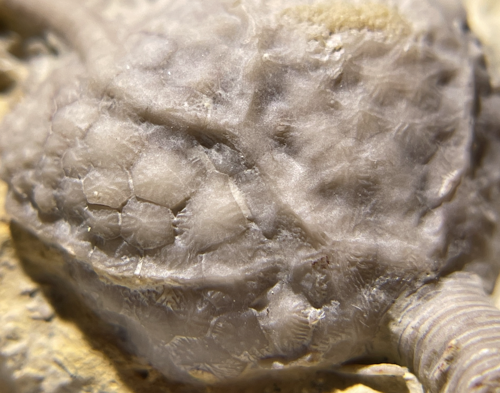
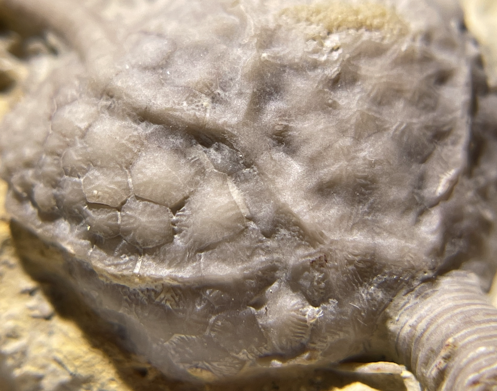

Pararchaeocrinus decoratus
• Ordovician
• Bromide Formation - Pooleville Member
• Criner Hills, Carter County, Oklahoma, USA
Size: 6.5 cm crown
Pararchaeocrinus decoratus is a relatively abundant crinoid in the Bromide, but is seldom found with such fine and complete preservation of the arms. It is a camerate with a wide, globose cup and densely-branching pinnulated arms, which interestingly start out uniserial and transition to biserial within the same individual. A key trait of this species is its ornamentation, as seen in my second photo. The calyx bears prominent median ray ridges across the brachials, radials and basals (forming a pentagram-like pattern when viewed from the base), as well as much finer ridges that radiate beautifully from the center of the interradial/interbrachial plates.
 
